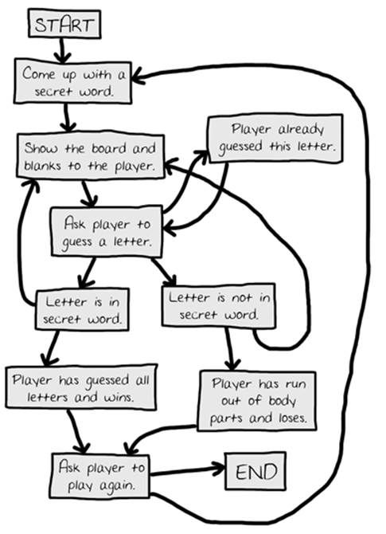
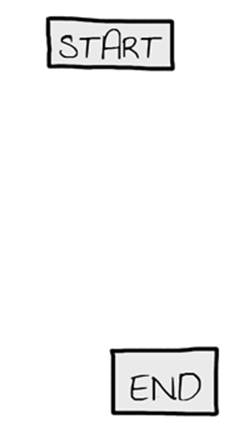
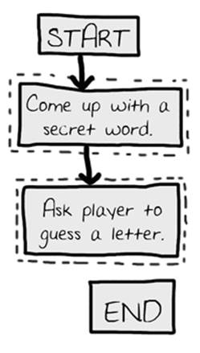
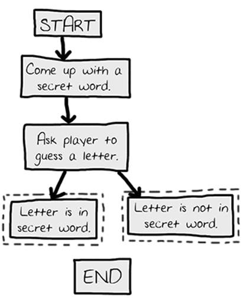
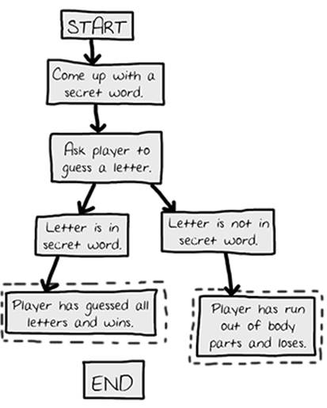
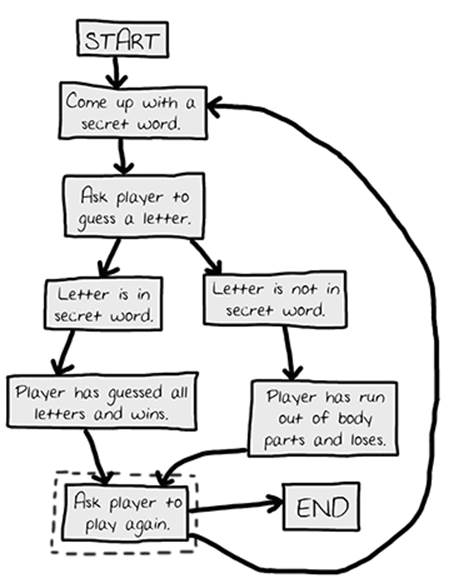
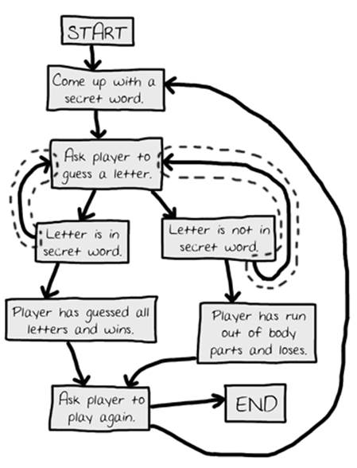
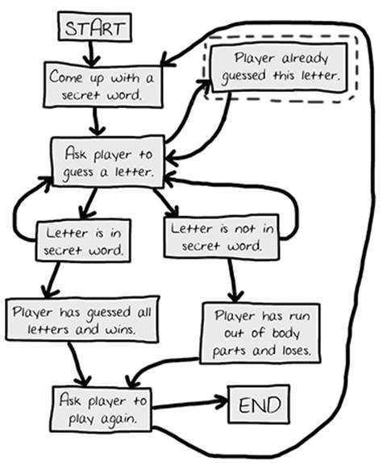

|
|
Chapter 8 |
Flow Charts |
Topics Covered In This Chapter:
· How to play Hangman
· ASCII art
· Designing a program with flow charts
In this chapter, you’ll design a Hangman game. This game is more complicated than our previous game, but also more fun. Because the game is advanced, you should first carefully plan it out by creating a flow chart (explained later). In the next chapter, you’ll actually write out the code for Hangman.
Hangman is a game for two people usually played with paper and pencil. One player thinks of a word, and then draws a blank on the page for each letter in the word. Then the second player tries to guess letters that might be in the word.
If they guess correctly, the first player writes the letter in the proper blank. If they guess incorrectly, the first player draws a single body part of the hanging man. If the second player can guess all the letters in the word before the hangman is completely drawn, they win. But if they can’t figure it out in time, they lose.
Here is an example of what the player might see when they run the Hangman program you’ll write in the next chapter. The text that the player enters in shown in bold.
H A N G M A N
+---+
| |
|
|
|
|
=========
Missed letters:
_ _ _
Guess a letter.
a
+---+
| |
|
|
|
|
=========
Missed letters:
_ a _
Guess a letter.
o
+---+
| |
O |
|
|
|
=========
Missed letters: o
_ a _
Guess a letter.
r
+---+
| |
O |
| |
|
|
=========
Missed letters: or
_ a _
Guess a letter.
t
+---+
| |
O |
| |
|
|
=========
Missed letters: or
_ a t
Guess a letter.
a
You have already guessed that letter. Choose again.
Guess a letter.
c
Yes! The secret word is "cat"! You have won!
Do you want to play again? (yes or no)
no
The graphics for Hangman are keyboard characters printed on the screen. This type of graphics is called ASCII art (pronounced “ask-ee”), which was a sort of precursor to emojii. Here is a cat drawn in ASCII art:
__________________
_____/ xx xxx \_____
_/xxx xx xxx xxx \__
__/ xxx xxx xx xxx \__
/xxxxxxxxx xx xx xx xx xxx\
/ xx /\ xx xx\
/ / \ x xx \
| /\ | \ xx x\
| | \ | \____ Z x \
| | \____/ \ z xxx |
| | \ z |
\/ \ \
/ ____/ | |
__| \____ | xxx|
/ | ___ ___------- __/ x|
/ | | | _______ ____/ |
| o\ -------- \_/ _/ ___/ xx /
|oo \ _____/ _/______/ xx/
\ \__ __/ xx /
\ \______________/ x_/
\____ _______/
\_______________________________/
This game is a bit more complicated than the ones you’ve seen so far, so take a moment to think about how it’s put together. First you’ll create a flow chart (like the one at the end of the Dragon Realm chapter) to help visualize what this program will do. This chapter will go over what flow charts are and why they are useful. The next chapter will go over the source code to the Hangman game.
A flow chart is a diagram that shows a series of steps as boxes connected with arrows. Each box represents a step, and the arrows show the steps leads to which other steps. Put your finger on the “Start” box of the flow chart and trace through the program by following the arrows to other boxes until you get to the “End” box.
Figure 8-1 is a complete flow chart for Hangman. You can only move from one box to another in the direction of the arrow. You can never go backwards unless there’s a second arrow going back, like in the “Player already guessed this letter” box.

Figure 8-1: The complete flow chart for what happens in the Hangman game.
Of course, you don’t have to make a flow chart. You could just start writing code. But often once you start programming you’ll think of things that must be added or changed. You may end up having to delete a lot of your code, which would be a waste of effort. To avoid this, it’s always best to plan how the program will work before you start writing it.
Your flow charts don’t always have to look like this one. As long as you understand the flow chart you made, it will be helpful when you start coding. A flow chart that begins with just a “Start” and an “End” box, as shown in Figure 8-2:

Figure 8-2: Begin your flow chart with a Start and End box.
Now think about what happens when you play Hangman. First, the computer thinks of a secret word. Then the player will guess letters. Add boxes for these events, as shown in Figure 8-3. The new boxes in each flow chart have a dashed outline around them.
The arrows show the order that the program should move. That is, first the program should come up with a secret word, and after that it should ask the player to guess a letter.

Figure 8-3: Draw out the first two steps of Hangman as boxes with descriptions.
But the game doesn’t end after the player guesses one letter. It needs to check if that letter is in the secret word or not.
Branching from a Flowchart Box
There are two possibilities: the letter is either in the word or not. You’ll add two new boxes to the flowchart, one for each case. This creates a branch in the flow chart, as show in Figure 8-4:

Figure 8-4: The branch has two arrows going to separate boxes.
If the letter is in the secret word, check if the player has guessed all the letters and won the game. If the letter isn’t in the secret word, another body part is added to the hanging man. Add boxes for those cases too.
You don’t need an arrow from the “Letter is in secret word” box to the “Player has run out of body parts and loses” box, because it’s impossible to lose as long as the player guesses correctly. It’s also impossible to win as long as the player is guessing incorrectly, so you don’t need to draw that arrow either. The flow chart now looks like Figure 8-5.

Figure 8-5: After the branch, the steps continue on their separate paths.
Ending or Restarting the Game
Once the player has won or lost, ask them if they want to play again with a new secret word. If the player doesn’t want to play again, the program will end. If the program doesn’t end, it thinks up a new secret word. This is shown in Figure 8-6.

Figure 8-6: The flow chart branches when asking the player to play again.
Guessing Again
The player doesn’t guess a letter just once. They have to keep guessing letters until they win or lose. You’ll draw two new arrows, as shown in Figure 8-7.

Figure 8-7: The new arrows (outlined) show the player can guess again.
What if the player guesses the same letter again? Rather than have them win or lose in this case, allow them to guess a different letter instead. This new box is shown in Figure 8-8.

Figure 8-8: Adding a step in case the player guesses a letter they already guessed.
Offering Feedback to the Player
The player needs to know how they’re doing in the game. The program should show them the hangman board and the secret word (with blanks for the letters they haven't guessed yet). These visuals will let them see how close they are to winning or losing the game.
This information is updated every time the player guesses a letter. Add a “Show the board and blanks to the player.” box to the flow chart between the “Come up with a secret word” and the “Ask player to guess a letter” boxes. These boxes are shown in Figure 8-9.

Figure 8-9: Adding “Show the board and blanks to the player.” to give the player feedback.
That looks good! This flow chart completely maps out everything that can happen in Hangman and in what order. When you design your own games, a flow chart can help you remember everything you need to code.
Summary
It may seem like a lot of work to sketch out a flow chart about the program first. After all, people want to play games, not look at flowcharts! But it is much easier to make changes and notice problems by thinking about how the program works before writing the code for it.
If you jump in to write the code first, you may discover problems that require you to change the code you’ve already written. Every time you change your code, you are taking a chance you create new bugs by changing too little or too much. It is much better to know what you want to build before you build it.